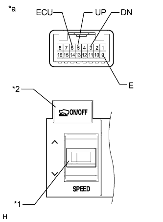

DTC C1379 Downhill Assist Control Switch Malfunction (Test Mode DTC) |
| DTC Code | DTC Detection Condition | Trouble Area |
| C1379 | Stored only during test mode. |
|

| 1.CONFIRM VEHICLE SPECIFICATIONS |
Confirm the vehicle specifications.
| Result | Proceed to |
| w/ Downhill Assist Control | A |
| w/ Crawl Control | B |
|
| ||||
| A | |
| 2.READ VALUE USING INTELLIGENT TESTER (DOWNHILL ASSIST CONTROL SW) |
Turn the engine switch off.
Connect the intelligent tester to the DLC3.
Turn the engine switch on (IG).
Turn the intelligent tester on.
Enter the following menus: Chassis / ABS/VSC/TRC / Data List.
Check the Data List for proper functioning of the downhill assist control switch.
| Tester Display | Measurement Item/Range | Normal Condition | Diagnostic Note |
| Downhill Assist Control SW | Downhill assist control switch / ON or OFF | ON: Downhill assist control on OFF: Downhill assist control off | - |
|
| ||||
| OK | |
| 3.CHECK TEST MODE DTC |
Perform the downhill assist control switch check in the Test Mode Procedure (Click here).
|
| ||||
| OK | ||
| ||
| 4.INSPECT DOWNHILL ASSIST CONTROL SWITCH (COMBINATION SWITCH) |
Remove the combination switch (Click here).
 |
Measure the resistance according to the value(s) in the table below.
| Tester Connection | Switch Condition | Specified Condition |
| 15 (+B2) - 9 (E) | Pressed | Below 1 Ω |
| Not pressed | 10 kΩ or higher |
| *a | Component without harness connected (Downhill Assist Control Switch [Combination Switch]) |
|
| ||||
| OK | |
| 5.CHECK HARNESS AND CONNECTOR (SKID CONTROL ECU - DOWNHILL ASSIST CONTROL SWITCH) |
Disconnect the A7 skid control ECU connector.
Disconnect the i5 combination switch connector.
Measure the resistance according to the value(s) in the table below.
| Tester Connection | Condition | Specified Condition |
| A7-44 (HDCS) - i5-15 (+B2) | Always | Below 1 Ω |
| A7-44 (HDCS) - Body ground | Always | 10 kΩ or higher |
| i5-9 (E) - Body ground | Always | Below 1 Ω |
|
| ||||
| OK | ||
| ||
| 6.CHECK CAN BUS |
Check that there are no problems with the CAN communication system (Click here).
|
| ||||
| OK | |
| 7.READ VALUE USING INTELLIGENT TESTER (CRAWL CONTROL SWITCH) |
Turn the engine switch off.
Connect the intelligent tester to the DLC3.
Turn the engine switch on (IG).
Turn the intelligent tester on.
Enter the following menus: Body Electrical / D-SEAT SW / Data List.
Check the Data List for proper functioning of the crawl control switch.
| Tester Display | Measurement Item/Range | Normal Condition | Diagnostic Note |
| Crawl Control Main Switch | Crawl control switch (ON/OFF switch)/ ON or OFF | ON: Crawl control on OFF: Crawl control off | - |
| Crawl Control Up Switch | Crawl Control Switch (Speed selector switch)/ ON or OFF | ON: Speed selector switch pushed to the up side and held OFF: Speed selector switch not pushed to the up side | - |
| Crawl Control Down Switch | Crawl Control Switch (Speed selector switch)/ ON or OFF | ON: Speed selector switch pushed to the down side and held OFF: Speed selector switch down side not pushed to the down side | - |
|
| ||||
| OK | |
| 8.CHECK TEST MODE DTC |
Perform the crawl control switch check in the Test Mode Procedure (Click here).
|
| ||||
| OK | ||
| ||
| 9.CHECK HARNESS AND CONNECTOR (CRAWL CONTROL SWITCH - DRIVING SUPPORT SWITCH CONTROL ECU) |
Disconnect the i5 combination switch connector.
Disconnect the G60 driving support switch control ECU connector.
Measure the resistance according to the value(s) in the table below.
| Tester Connection | Condition | Specified Condition |
| i5-6 (ECU) - G60-15 (SWI3) | Always | Below 1 Ω |
| i5-6 (ECU) - Body ground | Always | 10 kΩ or higher |
| i5-5 (UP) - G60-13 (SWI4) | Always | Below 1 Ω |
| i5-5 (UP) - Body ground | Always | 10 kΩ or higher |
| i5-3 (DN) - G60-14 (SWI5) | Always | Below 1 Ω |
| i5-3 (DN) - Body ground | Always | 10 kΩ or higher |
| i5-9 (E) - Body ground | Always | Below 1 Ω |
|
| ||||
| OK | |
| 10.INSPECT CRAWL CONTROL SWITCH (COMBINATION SWITCH) |
Remove the combination switch (Click here).
|  |
Measure the resistance according to the value(s) in the table below.
| Tester Connection | Switch Condition | Specified Condition |
| 5 (UP) - 9 (E) | SPEED (UP): Pressed | Below 1 Ω |
| SPEED (UP): Not Pressed | 10 kΩ or higher | |
| 3 (DN) - 9 (E) | SPEED (DOWN): Pressed | Below 1 Ω |
| SPEED (DOWN): Not Pressed | 10 kΩ or higher | |
| 6 (ECU) - 9 (E) | ON/OFF: Pressed | Below 1 Ω |
| ON/OFF: Not pressed | 10 kΩ or higher |
| *1 | Speed Selector Switch |
| *2 | ON/OFF Switch |
| *a | Component without harness connected (Crawl Control Switch [Combination Switch]) |
|
| ||||
| OK | ||
| ||